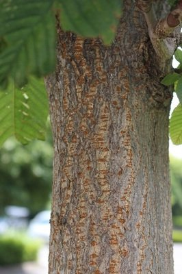
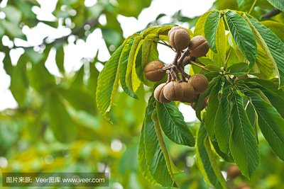
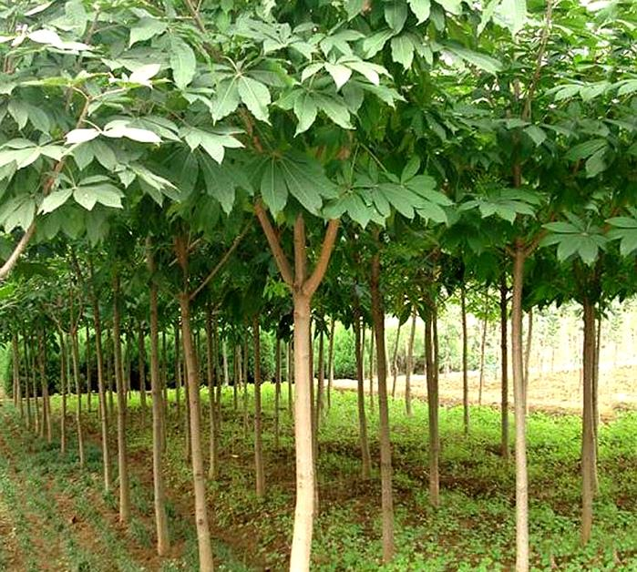
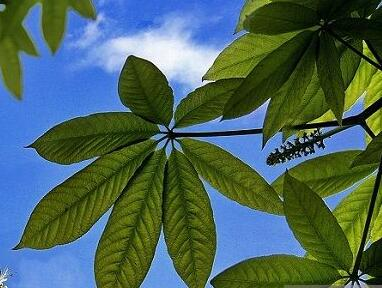

日本七叶树Aesculus turbinata Bl




形态特征：
又名春榆、白榆等，落叶乔木，高达25米，胸径1米，在干瘠之地长成灌木状；幼树树皮平滑，灰褐色或浅灰色，大树之皮暗灰色，不规则深纵裂，粗糙；小枝无毛或有毛，淡黄灰色、淡褐灰色或灰色，稀淡褐黄色或黄色，有散生皮孔，无膨大的木栓层及凸起的木栓翅；冬芽近球形或卵圆形，芽鳞背面无毛，内层芽鳞的边缘具白色长柔毛。
应用：
榆树树干通直，树形高大，绿荫较浓，适应性强，生长快，是城市绿化、行道树、庭荫树、工厂绿化、营造防护林的重要树种。在干瘠、严寒之地常呈灌木状，有用作绿篱者。又因其老茎残根萌芽力强，可自野外掘取制作盆景。在林业上也是营造防风林、水土保持林和盐碱地造林的主要树种之一。
七叶树科七叶树属